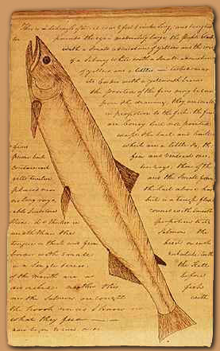
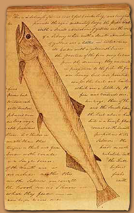

“Treat the earth well: it was not given to you by your parents, it was loaned to you by your children. We do not inherit the Earth from our ancestors, we borrow it from our children.” – Ancient Indian Proverb
The commodification of the early American landscape is a direct result of land, rivers, and vegetation being seen by explorers as valuable resources. Susan Scott Parrish mentions how “complex interwoven movements of knowledge and biota made America, not a naked continent awaiting European cloth…but a place for the fabrication of facts that traveled eastward to avid consumers” (7). This thirst for consumption of facts, natural resources and human labor lead to a period of exploration and “discovery” of the North American continent as illustrated in the early 19th century journals of explores Meriwether Lewis and William Clark. In a journal entry dated August 17, 1805, Lewis writes about the Native Americans:
We made them sensible of their dependance on the will of our government for every species of merchandize as well for their defence & comfort…. We also gave them as a reason why we wished to petrate the country as far as the ocean to the west of them was to examine and find out a more direct way to bring merchandize to them. that as no trade could be carryed on with them before our return to our homes that it was mutually advantageous to them as well as to ourselves...Lewis’s words indicate that he very clearly saw his mission in exploring the land as bringing the Native American indigenous tribes under the subjection of the American government. It can only be assumed that this subjection of the people would also include the subjugation of the land that the Native Americans occupied.
Lewis and Clark illustrate the practice of imposing European cultural standards on the land as they routinely rename rivers and other natural landmarks, replacing original Native American names with European ones. Furthermore, Lewis advances the idea of the commodification of the land in a passage when he notes its potential value “a noble river; one destined to become in my opinion an object of contention between the two great powers of America and Great Britin with rispect to the adjustment of the North westwardly boundary of the former; and that it will become one of the most interesting brances of the Missouri in a commercial point of view.” Even though he does not put a specific dollar price on the value of the land, this journal entry indicates that he does realize the importance of the future financial assessment and eventual commodification of the land and its resources.
Even earlier, John Smith in his 1616 “A Description of New England,” portrays American nature, particularly the sea and its abundance of fish, as an economic resource that surpasses gold and silver mines. Along with his emphasis on the great bounty of the sea, Smith repeatedly evokes the idea of America as teeming with life, both plant and animal, that is perfectly suited to human needs and economic endeavors.
Lewis, Meriwether, and William Clark.Journals of the Lewis and Clark Expedition.
Smith, John. “A Description of New England.”
Cronon, William. Changes in the Land: Indians, Colonists, and the Ecology of New England. New York: Hill and Wang, 1983. Print.
Dunn, Richard S. Sugar and Slaves: The Rise of the Planter Class in the English West Indies, 1624-1713. Chapel Hill: U of North Carolina P, 2000. Print.
Iannini, Christopher. Fatal Revolutions: Natural History, West Indian Slavery, and the Routes of American Literature. Chapel Hill: U of North Carolina P. 2012. Print.
McCusker, John J. The Economy of British America, 1607-1789. Chapel Hill: U of North Carolina P, 1991. Print.
Parrish, Susan Scott. American Curiosity: Cultures of Natural History in the Colonial British Atlantic World. Chapel Hill: U of North Carolina P. 2006. Print.
 
